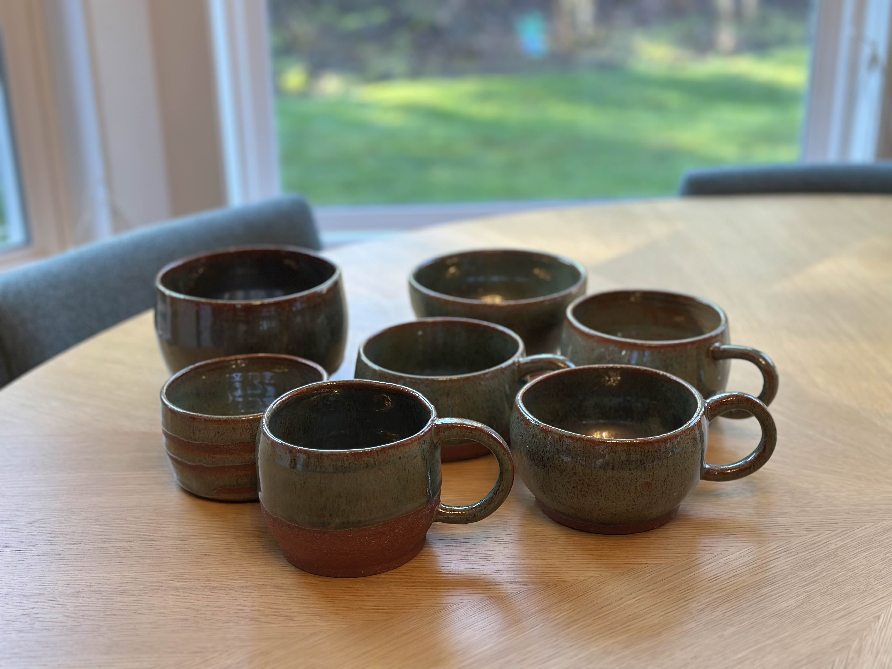
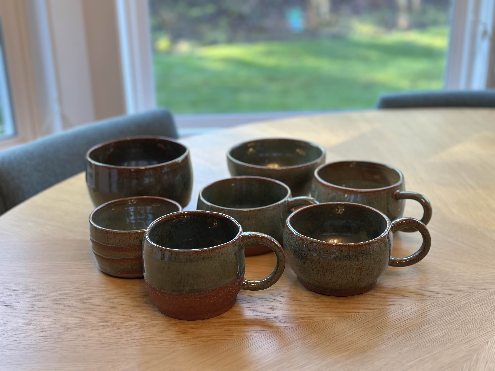
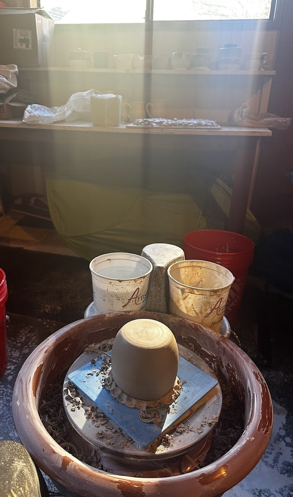
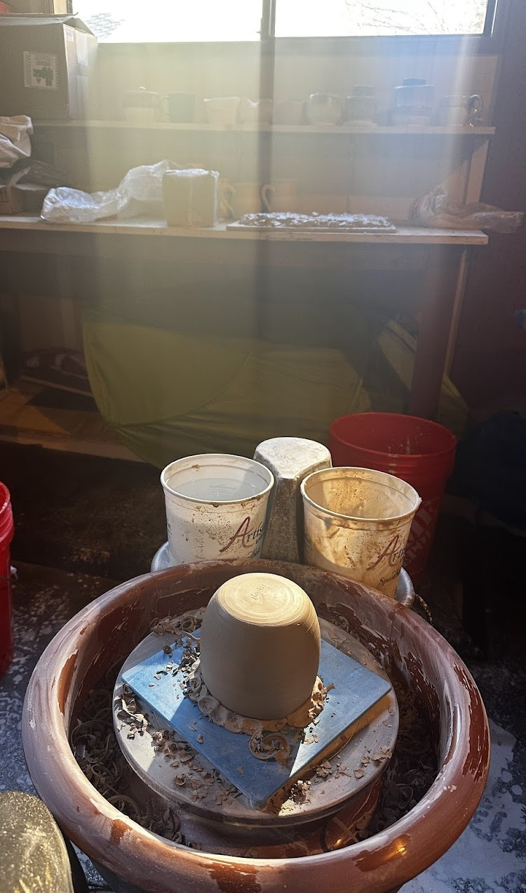
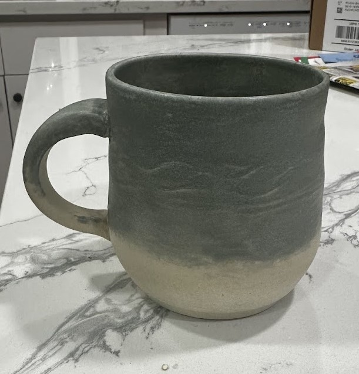
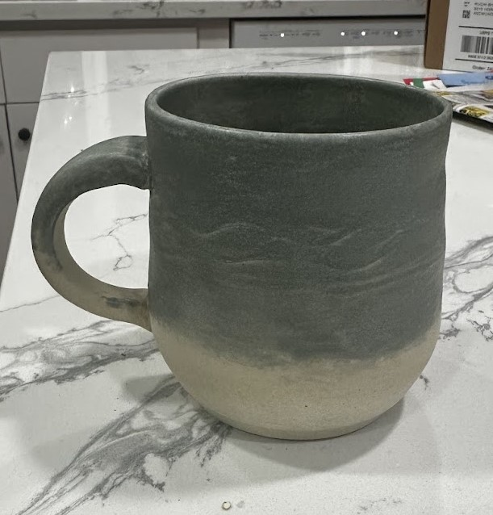

I got to pick up my set of glazes I mentioned on Jan 25th! THEY LOOK SO GOOD!! I am very happy with the mugs. I now have a set! There is a flaw where some of the rims are not perfectly round because they got deformed when moving them from the wheel.
When glazing these I wanted to make sure I show more of the raw red clay. I love every piece that came out of this glaze, If I make more they will be gifts!

 



 
